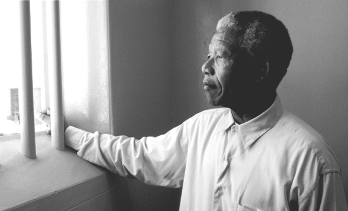

Nelson Rolihlahla Mandela
South Africa's First Black President


First Black democratic President of South Africa.
Timeline of Nelson Rolihlahla Mandela's life:
- 1918 - Born in Eastern Cape, Mvezo village
- 1930 - Rolihlahla became a ward of Jongintaba at the Great Place in Mqhekezweni
- 1941 - He worked as a mine security officer and after meeting Walter Sisulu, an estate agent, he was introduced to Lazer Sidelsky
- 1943 - He completed his BA through the University of South Africa and went back to Fort Hare for his graduation
- 1949 - Mandela rose through the ranks of the ANCYL and through its efforts, the ANC adopted a more radical mass-based policy, the Programme of Action
- 1962 - Using the adopted name David Motsamayi, Mandela secretly left South Africa. using the adopted name David Motsamayi, Mandela secretly left South Africa
- 1988 - He was diagnosed with tuberculosis.
- 1990 - He was released from prision,nine days after the unbanning of the ANC and the PAC and nearly four months after the release of his remaining Rivonia comrades.
- 1991 - Mandela was elected ANC President to replace his ailing friend, Oliver Tambo.
- 1994 - May 10 he was inagugurated as South African's first democratically elected President
- 1999 - He stepped down as President after one term
- 2013 - He died at his home in Johannesburg on 5 December.
"I have dedicated my life to this struggle of the African people. I have fought against white domination, and I have fought against black domination. I have cherished the ideal of a democratic and free society in which all persons will live together in harmony and with equal opportunities. It is an ideal for which I hope to live for and to see realized. But, My Lord, if it needs to be, it is an ideal for which I am prepared to die."
--Nelson Rolihlahla Mandela